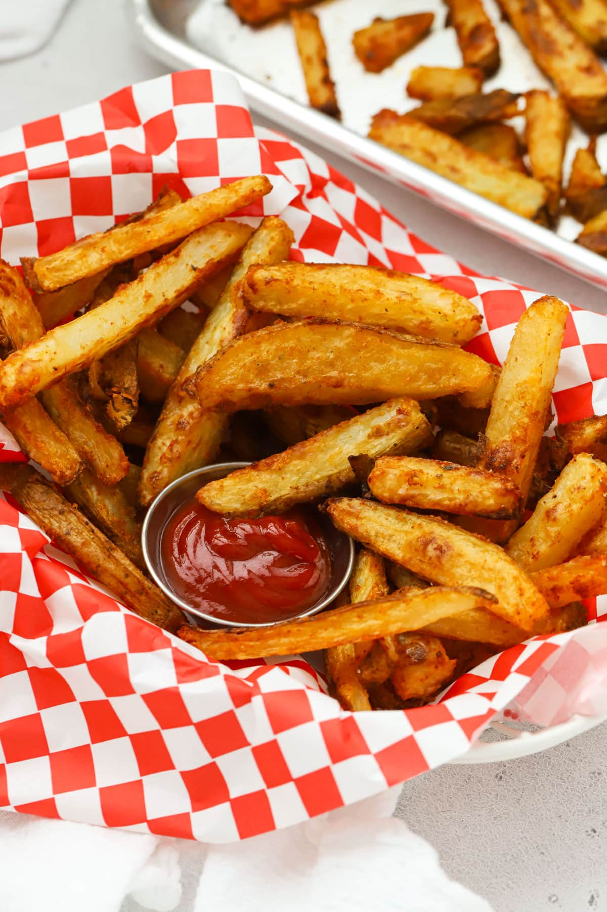

Fries
Home

Description
Thick-cut, hand-carved steak fries with a golden, seasoned crust and a soft, fluffy interior. These are cut irregularly by hand rather than uniformly, giving them a rustic, homestyle look, with plenty of crispy edges from being spread out and
baked (or air-fried) on a sheet pan. They're seasoned with a warm, paprika-forward spice blend that gives them a subtle kick and deep amber color without being deep-fried. Served in a classic red-and-white checkered paper-lined basket with a side of ketchup for dipping, these are the kind of hearty,
better-for-you fries that still deliver on crunch and flavor — great as a side for burgers, sandwiches, or on their own as a snack.
Ingredients
- 4 russet potatoes, cut into thick wedges
- 2 tablespoons olive oil
- 1 teaspoons paprika
- 0.5 teaspoons garlic powder
- 0.5 teaspoons onion powder
- 1 teaspoons salt
- 0.3 teaspoons black pepper
- 0.5 tablespoons cornstarch
- 0.5 cups ketchup, for serving
Steps
- Cut the potatoes: Preheat the oven to 425°F (220°C). Cut 4 russet potatoes, cut into thick wedges lengthwise into thick, rustic wedges or fries, roughly the same size so they cook evenly.
- Soak and dry: Soak the cut potatoes in cold water to remove excess starch — this helps them crisp up. Drain well and pat completely dry with a towel.
- Season the fries: In a large bowl, toss the dried potatoes with 2 tablespoons olive oil, 1 teaspoons paprika, 0.5 teaspoons garlic powder, 0.5 teaspoons onion powder, 1 teaspoons salt, 0.3 teaspoons black pepper, and 0.5 tablespoons cornstarch until evenly coated.
- Bake: Spread the fries in a single layer on a baking sheet, leaving space between pieces so they crisp instead of steam. Bake, flipping halfway through.
- Crisp and serve: For extra crispness, broil for the last 3 minutes 03:00, watching closely. Serve hot in a basket with 0.5 cups ketchup, for serving on the side.